A designer budget was never actually required to make a living room look expensive. The right decor ideas can make an ordinary sofa, a basic coffee table, and plain walls feel surprisingly polished. The trick rarely comes down to buying more. It comes down to choosing better proportions, better lighting, better textures, and fewer things that actually matter.
One gorgeous cushion can't rescue a room with a tiny rug and a ceiling light that makes everyone look like they haven't slept since 2017. Good design works from the foundation upward.
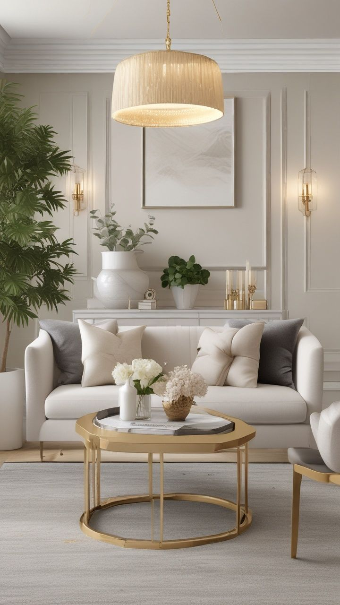
So what actually makes a living room feel expensive? And which upgrades deserve the money first?
Here's a look at the details that create that collected, designer-style feeling without turning a home into a showroom.
The ideas below run from the broader mindset shifts down to the specific, room-by-room fixes, so there's a logical entry point whether the goal is a full overhaul or one small Saturday project.
Why Does Layering Make a Living Room Feel More Luxurious?
Luxury interiors rarely rely on one material, one color, or one light source.
They create depth through layers.
Linen beside velvet, wood beside metal, a soft rug beneath structured furniture, warm lamps glowing against natural daylight. The eye moves around the room because nothing feels completely flat.
The same principle applies to color. A room with three related shades often looks more sophisticated than a room with ten unrelated ones.
Editing, rather than decorating, is really the better way to think about the whole process. Every item needs a reason to stay.
And yes, sometimes the most expensive-looking change involves putting something in a cupboard.
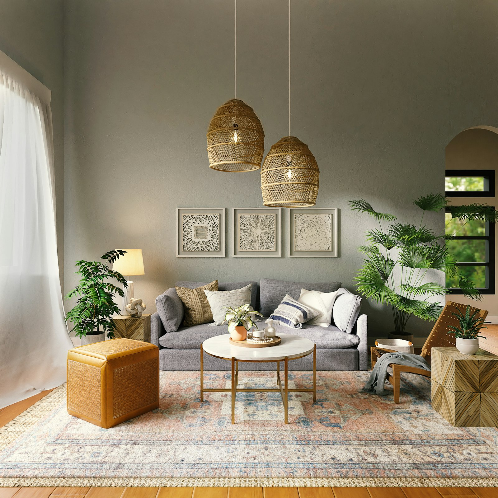
What Should You Fix First in a Living Room?
Starting with the bones of the room always makes the most sense.
Before shopping for decorative bowls and another vase that absolutely isn't needed, checking the rug, furniture arrangement, curtains, lighting, and wall balance comes first. A few questions help:
- Does the rug feel large enough for the seating area?
- Does the furniture float awkwardly in the room?
- Do the curtains actually reach the floor?
- Does the room have more than one light source?
- Does the wall above the sofa feel properly scaled?
- Are there too many tiny decorative pieces?
The room can often transform without a single new sofa. A room that looks expensive is rarely the one that actually spent the most, which makes this approach a pretty excellent design feature on top of everything else.
Can a Living Room Look Expensive on a Budget?
Absolutely.
Some of the best living room decor ideas cost surprisingly little, since they improve what's already there instead of replacing everything.
A basic curtain panel suddenly looks custom once it's hung higher and reaches the floor. One beautiful floor lamp can completely change a dark corner. Removing half the little objects from a coffee table can make the remaining pieces look far more intentional.
Scale, lighting, textiles, and restraint consistently matter more than the price tag, which leaves plenty of room to work with a realistic budget.
What Actually Makes a Living Room Look Expensive?
A luxurious-looking living room usually has one thing in common: everything feels intentional.
Thousands of dollars can go into furniture and still produce a room that feels flat. Meanwhile, an affordable room can look beautifully finished when the scale works, the lighting feels warm, the textiles have depth, and the decorative pieces have enough breathing room.
Proportion tends to matter more than price. The first thing a trained eye actually notices in a room isn't the sofa or the art, it's whether the proportions hold together at all.
That idea changes how the whole decorating process should start. Before buying another accessory, the big picture deserves a look first. Does the rug anchor the seating? Does the artwork suit the wall? Does the room have enough light at different heights? Does the furniture actually relate to the size of the space?
Those questions matter far more than whether the coffee table came from a luxury showroom.
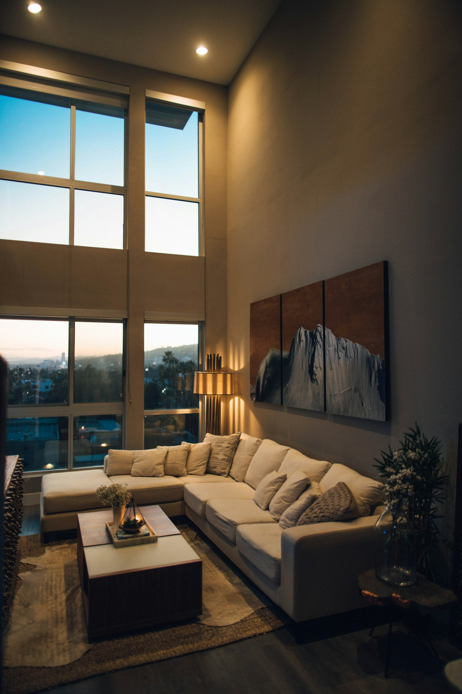

17 Living Room Decor Ideas That Make a Space Feel Instantly More Expensive
1. Mix New Pieces With Vintage or Collected Finds
Here's one of the strongest living room decor ideas available: stop making everything look brand new.
A room filled entirely with matching contemporary furniture can feel more like a staged showroom than a real home. Mixing in something with history changes that fast, a vintage side table, an antique-style frame, an old ceramic piece, a secondhand lamp, or artwork that's genuinely loved.
The contrast gives the room real personality. A polished interior should tell a story. It should look like someone lived there, traveled, collected things, changed their mind, and developed excellent taste along the way.
That matters because a living room shouldn't simply look expensive. It should feel comfortable enough to actually live in, especially given how much use a living room gets from both the people who live there and the guests who visit.
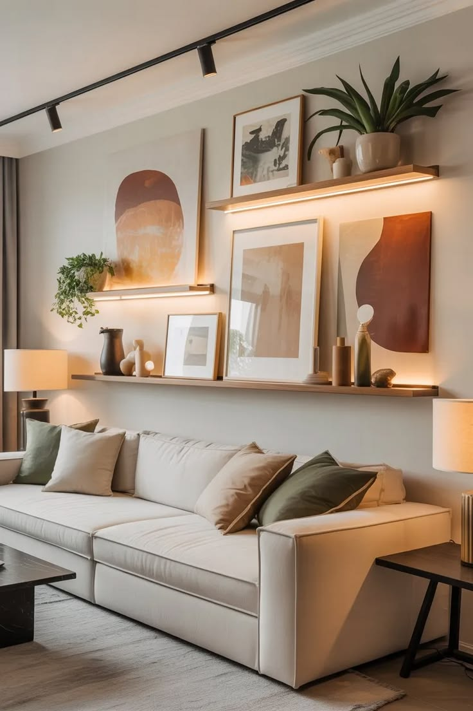
2. Declutter the Surfaces
This might cost absolutely nothing.
And honestly, that makes it one of the best budget decorating tricks available.
Removing unnecessary objects from shelves, coffee tables, side tables, and consoles, then leaving some negative space around the pieces that actually matter, does real work on its own.
A room often feels expensive when the eye can rest. Clutter creates visual noise, while restraint creates the impression that every object earned its position. Fewer, better-scaled pieces consistently create a more refined result than an abundance of small accessories.
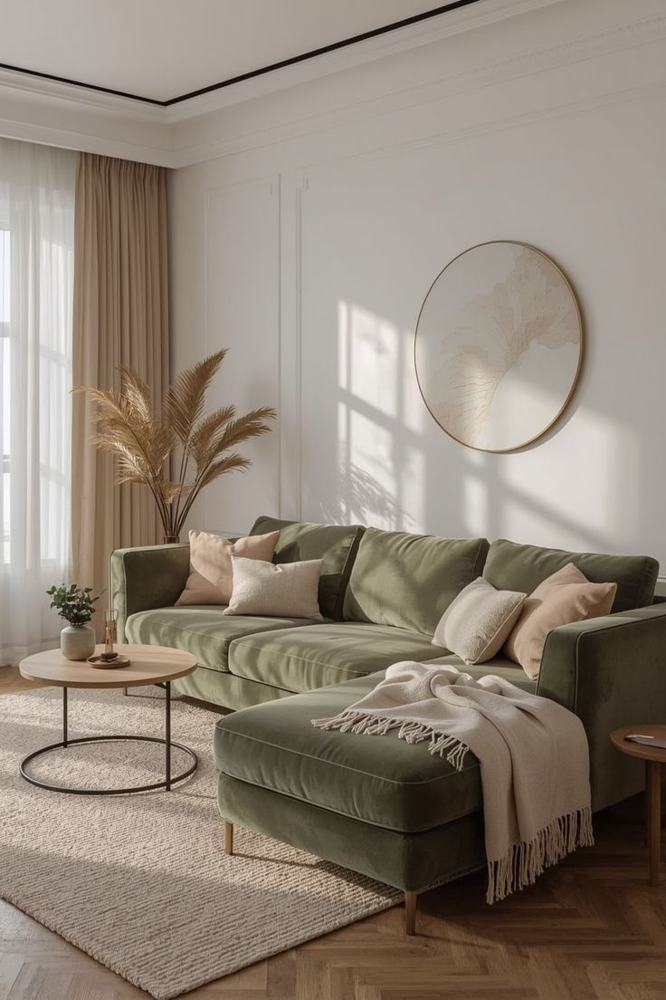

3. Introduce One Sophisticated Accent Color
Neutral doesn't have to mean boring.
Choosing one accent color and repeating it subtly does the trick. Deep green, chocolate brown, burgundy, navy, dusty blue, or muted terracotta can all add depth depending on the palette.
The secret is restraint. A bright blue sofa, blue curtains, blue pillows, and blue artwork all shouting at each other was never the goal. One accent, appearing in several small places, reads as intentional through that repetition alone.
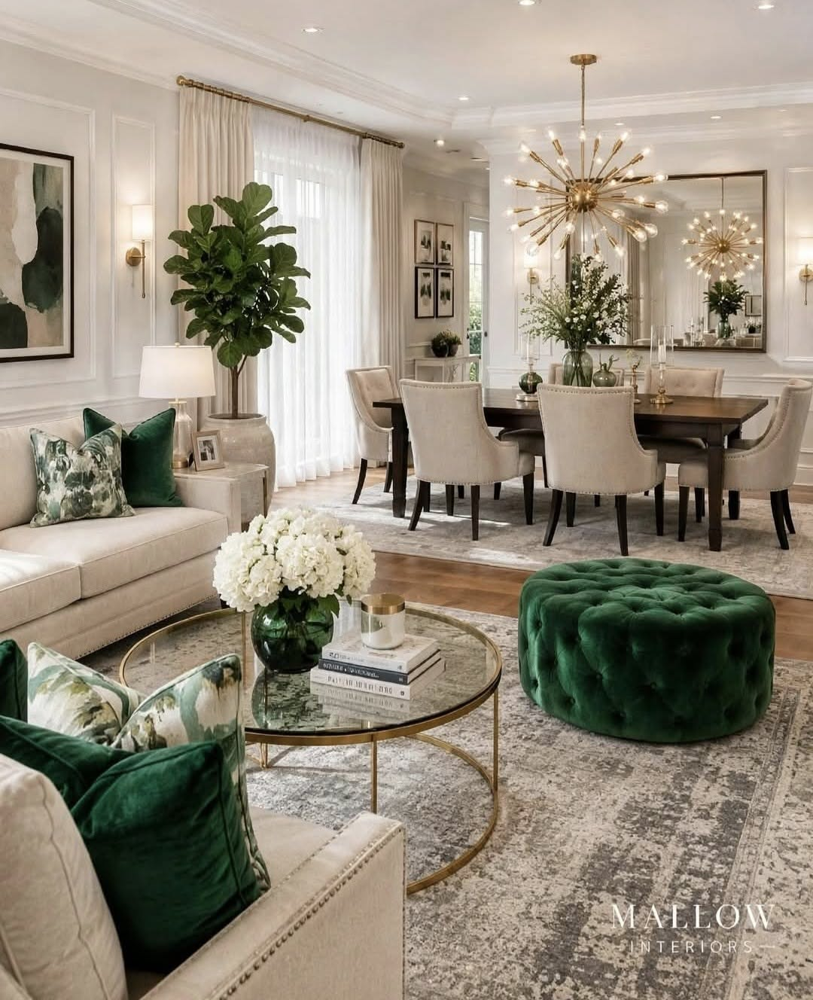
4. Pull Furniture Away From the Walls
This sounds almost too simple, but furniture placement can dramatically affect how expensive a room feels.
Pushing every piece directly against the walls, in an attempt to create more floor space, often makes furniture look disconnected instead.
Pulling the sofa slightly away from the wall when the room allows it, and letting seating face each other rather than everything pointing at the television, fixes that. Good furniture placement creates conversation zones, improves circulation, and gives the room a more deliberate layout. Furniture placement and scale are consistently flagged as major factors in creating harmony and avoiding a cramped, disconnected feeling.
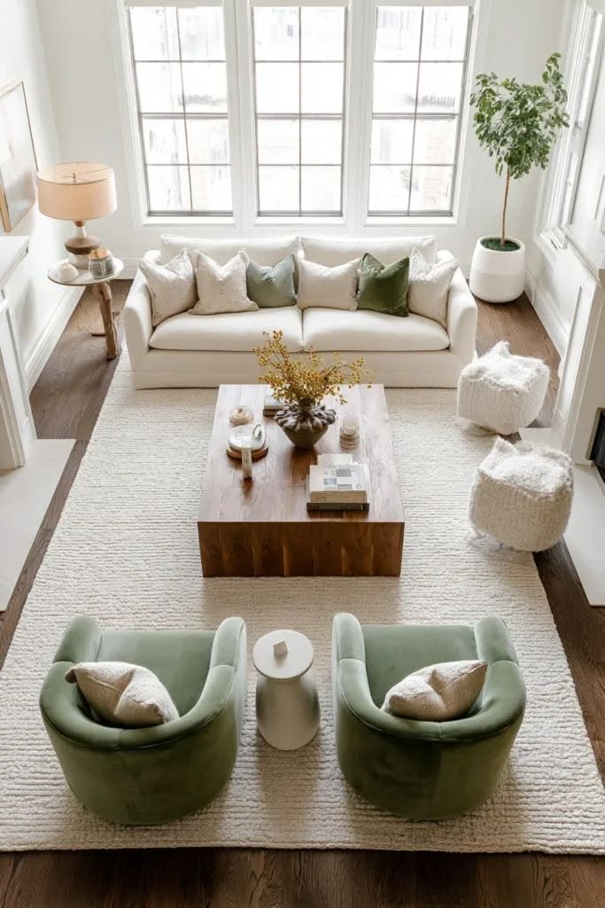
5. Add Greenery That Looks Architectural
Plants bring life into a living room, but not every plant arrangement creates a polished effect.
Choosing greenery based on the actual scale of the room matters. A tall plant fills an empty corner, a sculptural branch decorates a console, a trailing plant softens a shelf.
Fewer, larger plants tend to create a stronger visual impact than lots of tiny pots scattered around. Even artificial greenery works fine, as long as the shapes look realistic and the arrangement stays simple.
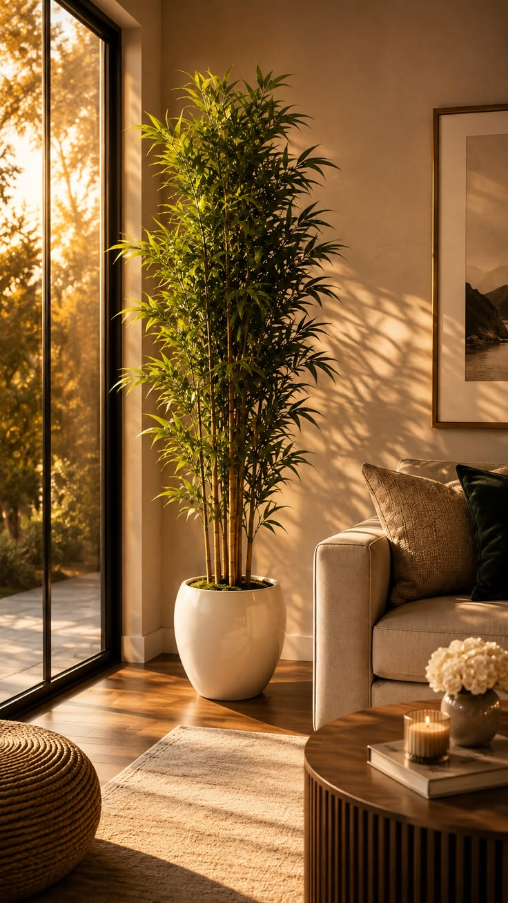


6. Create a Cohesive Gallery Wall
A gallery wall can look sophisticated when it's treated like one single composition.
Choosing a consistent color family for the artwork, or using matching frames, creates unity. Laying the pieces out on the floor first, before anything goes on the wall, helps work out the arrangement.
Keeping the spacing fairly consistent makes the whole collection feel intentional. Scattering tiny frames across an enormous wall only works when that collected, eclectic look is specifically the goal. Scale still matters either way.
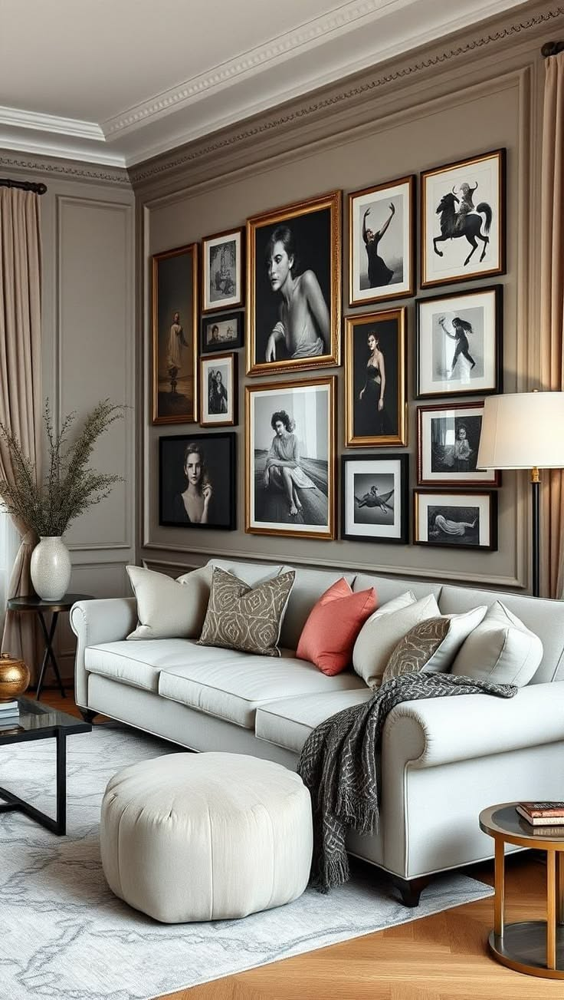
upsimples Picture Frames Set of 19, Black Frame
Shop on Amazon7. Upgrade the Throw Pillows
Pillows seem small, but they can completely change how a sofa looks.
Combining different sizes and textures, instead of buying six identical cushions, makes the biggest difference:
- Solid neutral fabric
- Textured boucle or woven material
- Subtle pattern
- One slightly darker accent
Switching pillow covers seasonally, without replacing the inserts, gives a low-cost way to refresh the living room without touching the major furniture at all.
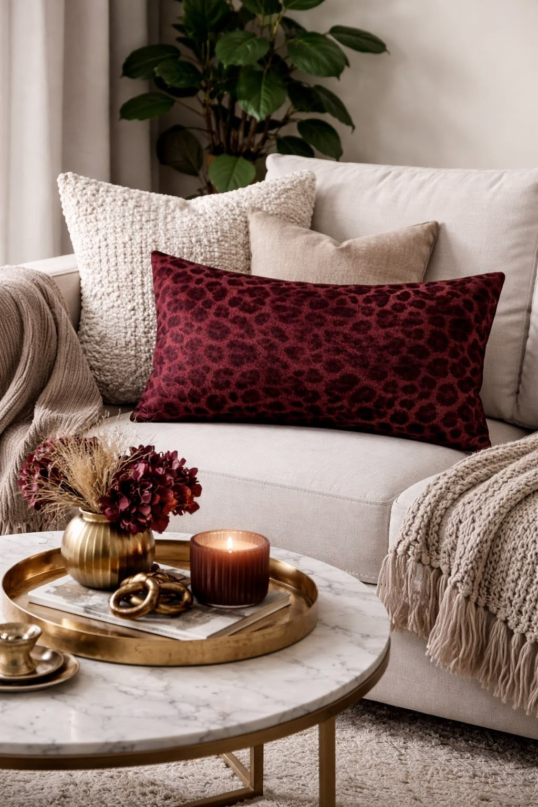

8. Add a Statement Mirror
A large mirror can do far more than decorate an empty wall.
It reflects natural light, makes a room feel larger, and gives a blank surface some architectural weight.
Choosing a substantial frame, rather than a tiny decorative mirror that disappears above the furniture, matters most here. A black frame creates contrast, brass adds warmth, natural wood softens the room. Placing the mirror where it actually reflects something attractive matters too, there's no point creating a beautiful reflection of the laundry basket.
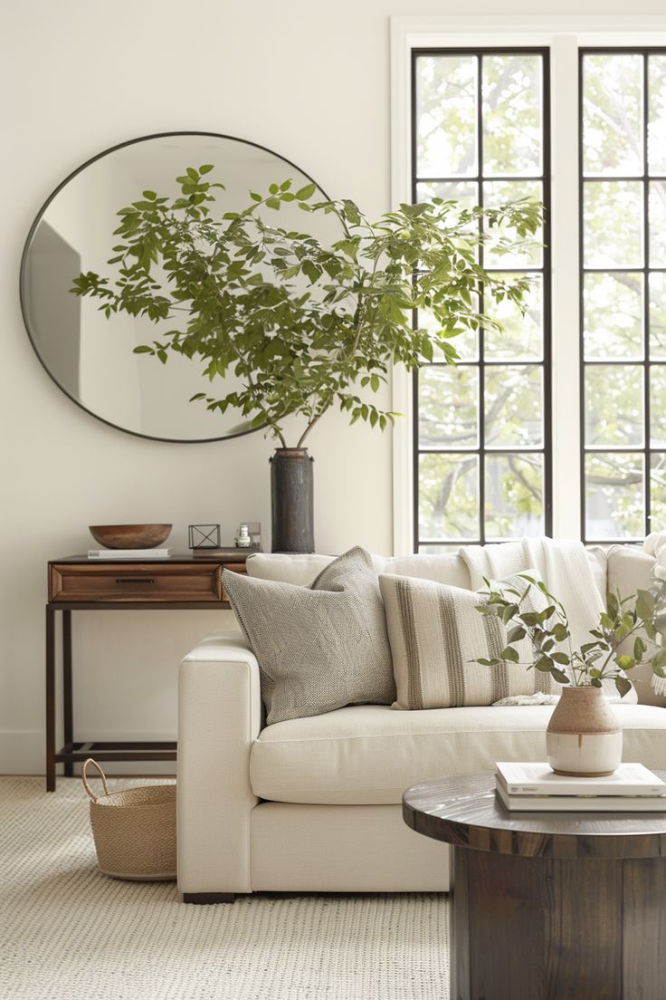
9. Use Matching Lamps Without Overdoing the Symmetry
Symmetry can make a living room feel expensive because it gives the room a sense of order.
Placing similar lamps on matching side tables beside the sofa, or flanking a large console, builds that order fast.
Identical accessories throughout the whole room were never actually necessary, mixing pieces rather than furnishing everything from one retailer avoids the showroom feeling that too much coordination can create. Symmetry for the major anchors, paired with variation in the smaller decorative details, reads as polished without ever becoming predictable.
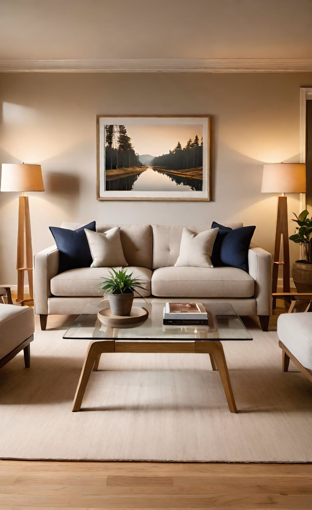
10. Give the Coffee Table More Structure
A coffee table can either make a living room look beautifully styled or make it look like everyone just dropped their belongings there.
The difference usually comes down to arrangement. A few intentional groupings, rather than covering the entire surface, is the better move. A simple formula covers it:
- A stack of two or three books
- One decorative object
- A low bowl or tray
- Something organic, like flowers or a small branch
Varying the heights keeps everything from sitting on one visual level, and leaving some genuinely empty space matters too. A coffee table doesn't need to audition for a storage unit.
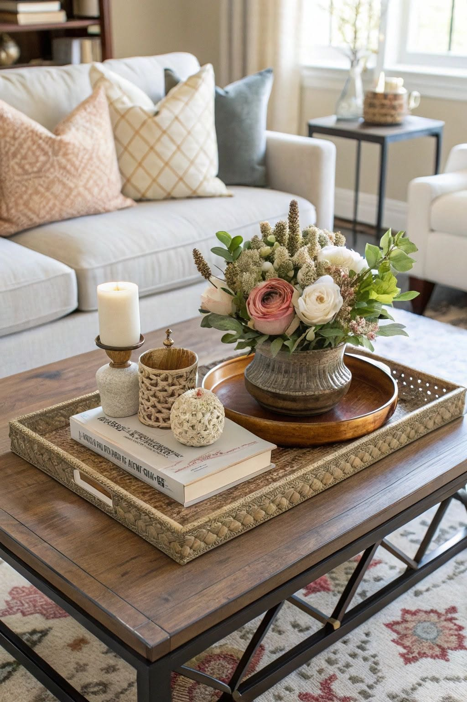
11. Bring in Natural Materials
Natural materials instantly give a room more visual character.
Wood, stone, linen, rattan, ceramic, cane, and woven fibers all count. Natural wood in particular keeps neutral interiors from feeling sterile, even just one chunky wood stool or a substantial wood side table introduces real warmth.
A whole shelf of rustic accessories was never required. One or two strong natural materials usually have more impact than an entire collection of smaller decorative objects.
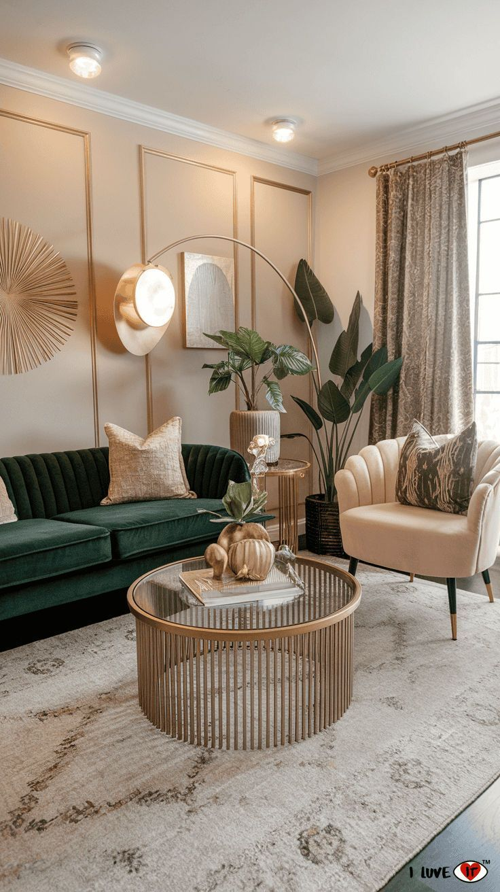
12. Keep the Color Palette Tight
One of the easiest living room decor moves to overlook is color discipline.
Picking a small family of colors and repeating them throughout the room works better than reaching for whatever looks nice individually. Warm white, beige, and muted brown build one direction. Cream, taupe, and soft olive build another. Black works well as a grounding accent in either.
The goal was never making everything match perfectly, that can actually make a room feel predictable instead. Repeating colors across different materials and shapes, a beige cushion, a tan ceramic vase, a warm wood frame, creates cohesion without looking like it was all bought as one matching set.
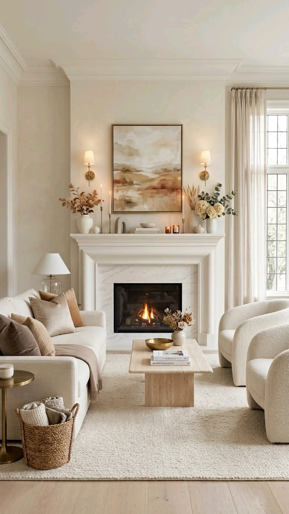
13. Mix Expensive-Looking Textures
Genuine luxury fabrics everywhere were never actually the requirement.
Visual texture is what's actually needed. Pairing smooth materials with soft ones, linen curtains with a boucle cushion, a wool-style rug beneath a leather or fabric sofa, a woven basket beside a sleek side table, does the job.
Texture creates depth even when the color palette stays simple. A neutral room can feel incredibly sophisticated once it leans on several textures instead of several colors.
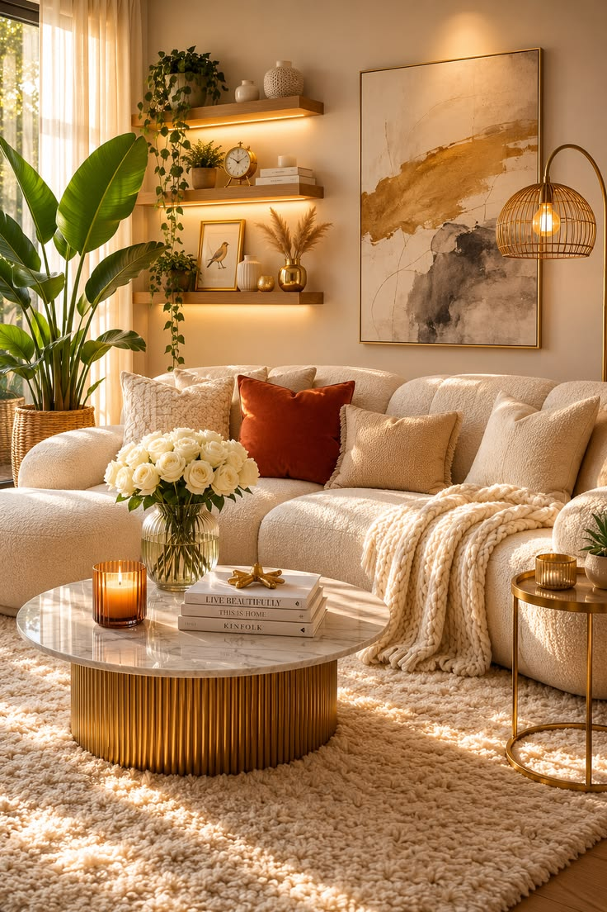


14. Add One Large Piece of Artwork
Tiny artwork often makes a large wall feel strangely unfinished.
Choosing one substantial piece, instead of filling every inch with small frames, gives the wall a clear focal point. A large abstract canvas, an oversized landscape, a vintage print, or a dramatic photograph all create the feeling of a curated interior without requiring a huge collection.
Oversized art above a sofa works especially well, since it gives the room a visual anchor immediately. Hanging it at a comfortable viewing height, rather than pushing it toward the ceiling, matters too, roughly 57 to 60 inches from the floor to the center of the piece is the usual target.
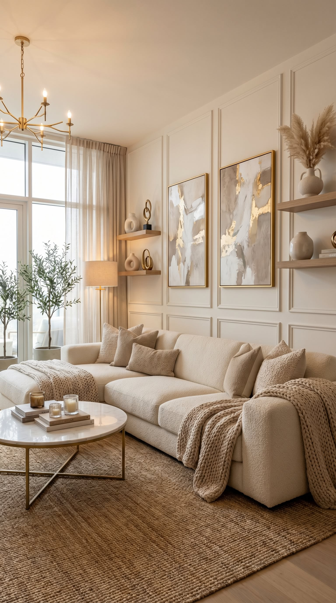

15. Replace the Harsh Ceiling Light With Layered Lighting
This might be one of the best living room decor ideas on the entire list.
A single overhead fixture usually gives one brightness level and one direction of light. That rarely creates the cozy atmosphere seen in genuinely beautiful interiors.
Layering the lighting instead across a few different heights solves it:
- A floor lamp beside the sofa
- A table lamp on a console or side table
- A ceiling fixture for general illumination
- Accent lighting near artwork or shelving
Layered lighting gives the room real depth and lets the atmosphere shift depending on the time of day. Asked what single finishing touch makes a room look more expensive, designers consistently point toward exactly this. That kind of consistency says a lot.
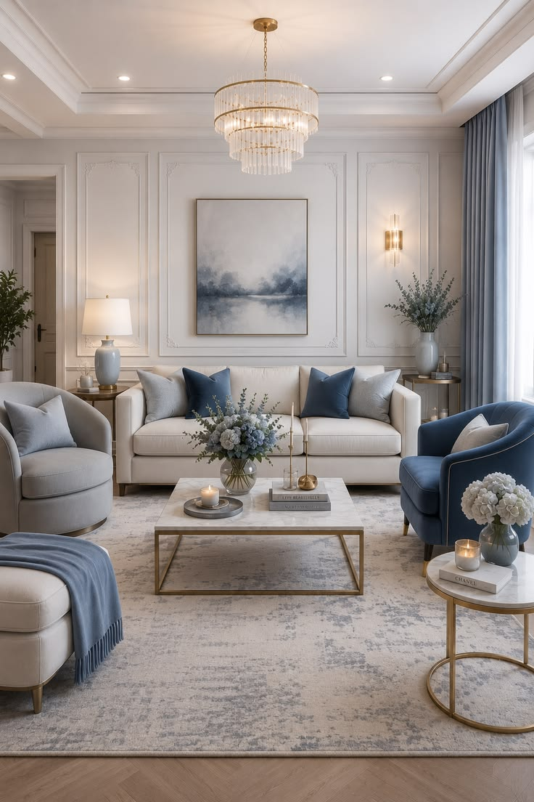
16. Hang Curtains Higher and Wider
Want one of the easiest ways to make a living room feel taller?
Move the curtain rod.
Mounting it several inches above the window frame, or closer to the ceiling when the room allows it, then extending it beyond the window so the fabric frames the glass instead of covering half of it, does most of the work.
Letting the curtains actually reach the floor matters most of all. Floor-length curtains instantly give the windows more visual importance, soften the room, and add a layer of fabric that makes inexpensive furniture feel more considered. Floor-length treatments consistently get recommended for exactly this reason, they create a cleaner, more polished finish.
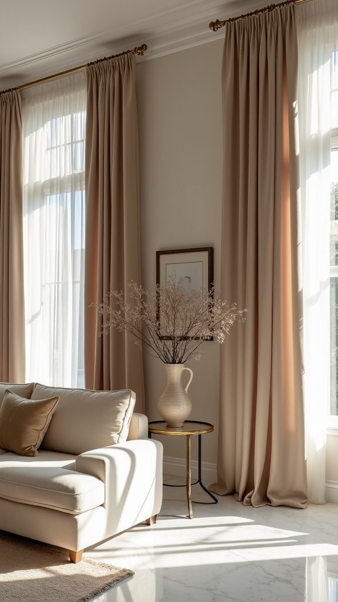
17. Choose an Oversized Rug
A properly sized rug can completely change a living room's decor.
This belongs near the top of the list because the same mistake shows up constantly: choosing a rug based on the empty floor space rather than the actual furniture grouping.
A rug should visually connect the seating instead of sitting like a small island underneath the coffee table. Placing at least the front legs of the main seating pieces on the rug makes the furniture feel connected and gives the entire room a more substantial foundation. Starting with a properly scaled rug is consistently the first move recommended for anchoring a room and improving its overall sense of proportion.
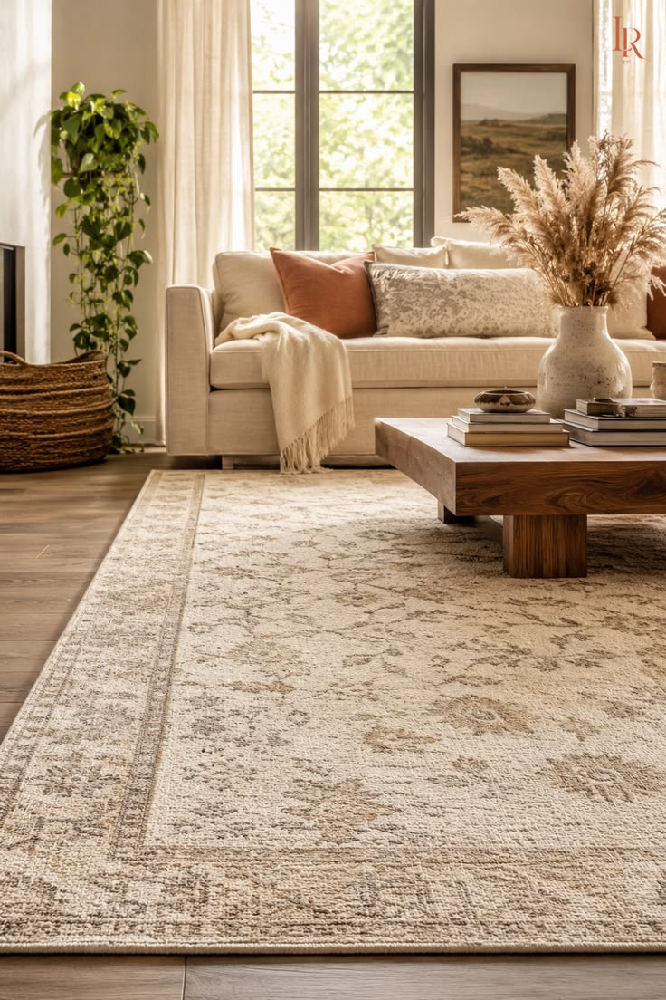

How Do You Make a Living Room Feel Expensive Without Buying New Furniture?
Starting with the pieces already owned works better than starting with a shopping list.
Moving the sofa. Resizing the rug. Raising the curtain rod. Replacing the cold bulbs. Removing unnecessary clutter. Adding one large artwork. Introducing a warmer texture.
Then looking at the room again often reveals that the furniture never actually needed replacing in the first place.
This approach is worth preferring in general, since it lets money go where the room genuinely needs it instead of buying another decorative object simply because the packaging looked persuasive.
What Should You Avoid When Decorating a Luxury-Looking Living Room?
Sometimes knowing what not to do matters just as much.
Undersized rugs, floating curtains, excessive matching, too many tiny accessories, and harsh lighting are all worth avoiding.
Filling every empty corner simply because it looks empty is worth avoiding too.
An empty corner can create balance. An empty wall can create breathing room.
Not every surface needs a candle, vase, tray, basket, sculpture, and a small decorative object whose actual purpose nobody understands.
The best rooms consistently leave a little room for the eye to rest.
How Can You Make a Living Room Look Expensive Quickly?
Starting with the changes that create the biggest visual difference makes the most sense.
Tackling the room in this order tends to work best:
- Fix the rug
- Improve the lighting
- Hang the curtains correctly
- Edit the clutter
- Add large-scale artwork
- Layer textures
- Introduce one or two natural materials
Styling the smaller details comes after that.
That order matters, since spending real money on cushions while the rug underneath them makes the entire sofa grouping look disconnected defeats the purpose. Good design works from the foundation outward.
Final Thoughts on Expensive-Looking Living Room Decor
The best living room decor ideas never depend on a giant budget.
They depend on proportion, restraint, texture, lighting, and thoughtful placement.
A large rug makes furniture feel more substantial. Floor-length curtains make a room feel taller. Layered lighting creates atmosphere. Oversized artwork anchors an empty wall. Natural materials add warmth. A little negative space makes everything else feel more important.
And perhaps the biggest lesson of all: expensive-looking doesn't mean expensive.
A beautifully edited room with affordable furniture, warm lighting, meaningful artwork, and great proportions will always beat a wildly expensive room where every surface screams for attention.
So before any shopping trip, standing in the doorway and actually looking at the living room is worth doing first. What feels too small? What feels too empty? What feels too cluttered? Where does the eye stop?
Those answers say far more than another shopping trip ever will.
And yes, sometimes the most luxurious thing a living room can get is simply a little empty space. The home probably didn't need another throw pillow after all.
Pick one change from this list, live with it for a week, and then decide whether the next one is actually worth making. That pace alone will beat most full-room overhauls.